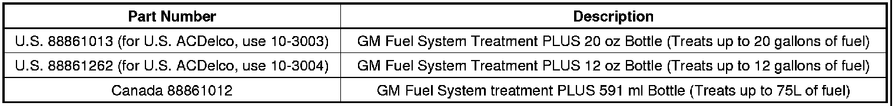

Fuel System - Fuel Injector Maintenance Cleaning
INFORMATIONBulletin No.: 04-06-04-051C
Date: April 19, 2012
Subject: Maintenance Cleaning of Fuel Injectors
Models:
2013 and Prior GM Passenger Cars and Trucks
Supercede:
This bulletin is being revised to add model years and Parts Information. Please discard Corporate Bulletin Number 04-06-04-051B (Section 06 - Engine/Propulsion System).
General Motors is aware that some companies are marketing tools, equipment
and programs to support fuel injector cleaning as a preventative
maintenance procedure. General Motors does not endorse, support or acknowledge the need for fuel injector cleaning as a preventative maintenance procedure. Fuel injector cleaning is approved only when performed as directed by a published GM driveability or DTC diagnostic service procedure.
Due to variation in fuel quality in different areas of the country, the only preventative maintenance currently endorsed by GM regarding its gasoline engine fuel systems is the addition of GM Fuel System Treatment PLUS added to a tank of fuel at each oil change.

Parts Information

Disclaimer